Senior thesis · Princeton MAE
MARSKIN
Six layers of armour for a robot that has to keep folding
Co-authored with Susan Zhang '26. Advisor: Prof. Andrej Košmrlj. Reader: Prof. Mikko Haataja.
OSCAR folds down to fit through gaps — which is exactly what makes it hard to protect. MARSKIN is the six-layer skin that insulates, sheds dust, resists abrasion, and still bends at the creases, plus the campaign that found where it works and where it doesn't.
The problem
OSCAR's whole value proposition is that it collapses. A rigid enclosure would protect it beautifully and defeat the point. The skin had to survive Mars-like thermal and abrasive conditions, tolerate repeated folding at the creases, and be buildable by two undergraduates in a university lab.
Approach
A layup, not a material. Each layer does one job: TPU and EcoFlex for compliance and a bondable base, aerogel for insulation, PETG-PTFE and aluminium for radiant load and durability, superhydrophobic coating for dust.
Circular test articles first — fast to make, easy to instrument, directly comparable against controls. Once the layup settled, an OSCAR-specific panelized geometry that puts seams away from the fold lines.
What I built
The layup and the fixturing to reproduce it. The onboard sensing — a Pi Zero 2 W syncing a contact TMP117 and non-contact MLX90614 at 1 Hz with 1080p day/night stills every 10 s. And the rigs, so MARSKIN and both controls saw identical conditions every run.
What the data said
Under the heat lamp it isn't subtle. At 19.8 cm the full stack held a peak through-thickness ΔT of 26.5 °C against 4.6 °C for the better control. Across all three standoffs: ~595% higher peak ΔT, ~650% higher mean.
Conduction was more interesting. At 75 °C the stack led clearly — 23.7 °C peak against 12.8 °C for the better control. At 50 °C the two came in 0.9 °C apart, 4.5 against 5.4 °C, and I don't report that as a result. That was one of the first runs, before the protocol had settled: we were moving the same sensors between test articles rather than instrumenting each one independently, so placement and contact varied from run to run, and the rig was still a bench setup rather than a controlled environment. A 0.9 °C margin is smaller than that arrangement could resolve. It needs repeating before anything is claimed from it in either direction. What the conductive data does support is the mechanism — the aerogel earns its place once the gradient is steep enough, and 75 °C is steep enough.
Three hot–cold cycles with response intact, no visible delamination, still foldable — which was the constraint that made the problem worth doing.
Percentages compare against the best-performing control at each condition. Absolute values are the honest version, and both are plotted below. The 50 °C plate run is excluded from every percentage claim here, for the reason above.
What I'd do differently
The real limitation is the environment, not the skin. Everything here was measured in a lab: room air, room pressure, a heat lamp standing in for solar flux. Mars is 6 mbar of CO₂, −60 °C on average, and abrasive dust driven by wind. A thermal-vacuum chamber with a CO₂ atmosphere and regolith simulant would tell you whether the layup actually holds, and nothing short of that moves this past a low TRL.
The test methods need the same tightening: more replicates, controlled emissivity, calibrated flux instead of lamp distance, and a defined cycling protocol — enough statistical power to state a result with error bars rather than a single comparison per condition.
Two specifics I'd chase inside that: a clean re-run of the conductive case with dedicated sensors per article and controlled contact, swept between 50 and 75 °C so the gradient dependence becomes a design rule instead of two disconnected points; and fold endurance — three cycles proves nothing, dozens would start to.
Documentation
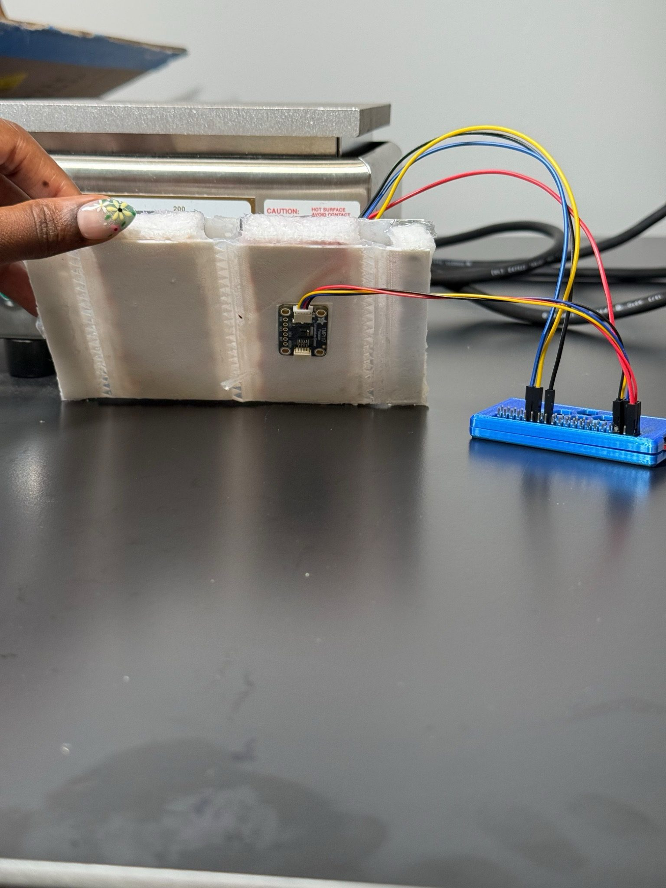
Drop file atassets/marskin/instrumented.jpg
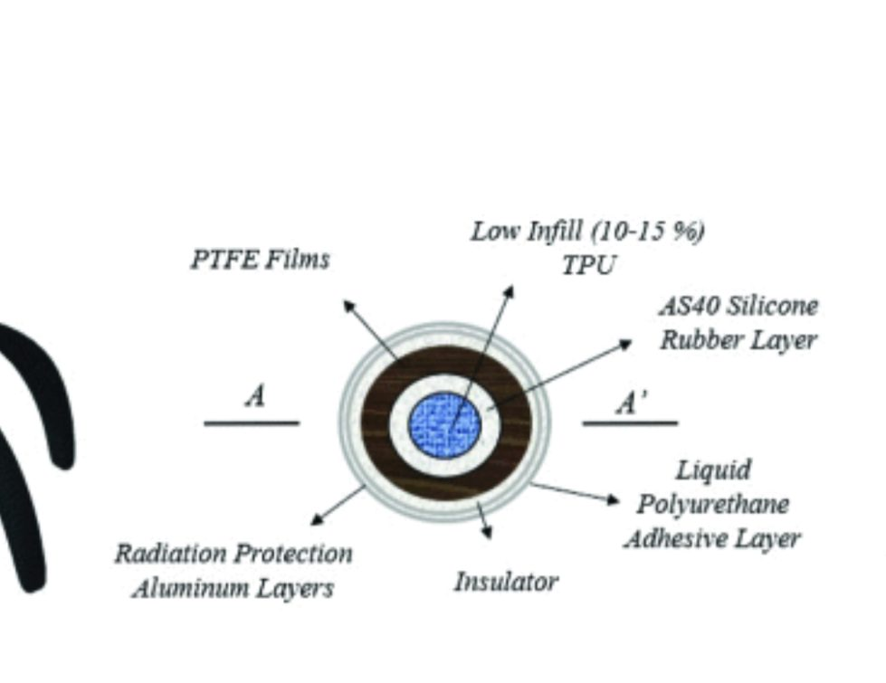
Drop file atassets/marskin/layers.jpg
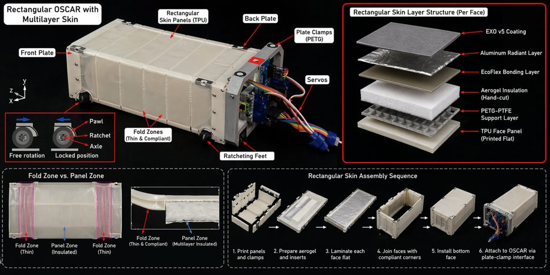
Drop file atassets/marskin/skin-structure.jpg
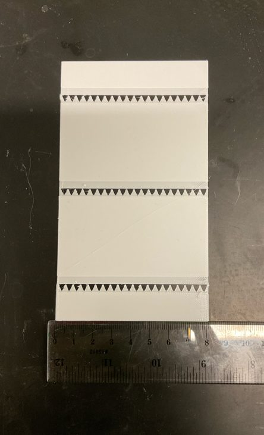
Drop file atassets/marskin/panel-folded.jpg
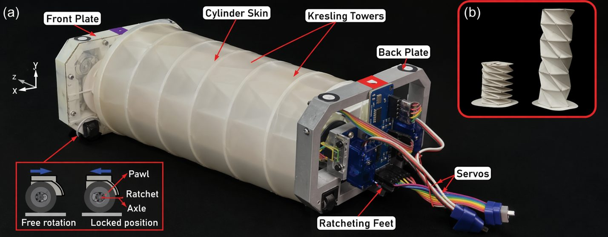
Drop file atassets/marskin/oscar-cad.jpg
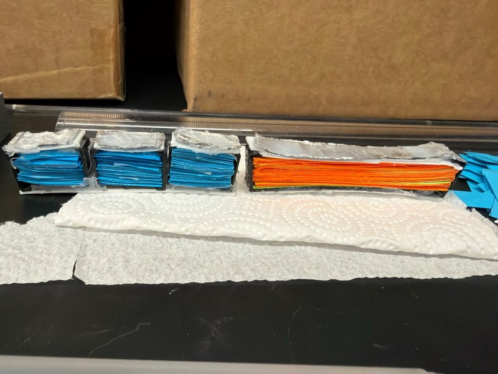
Drop file atassets/marskin/fabrication.jpg
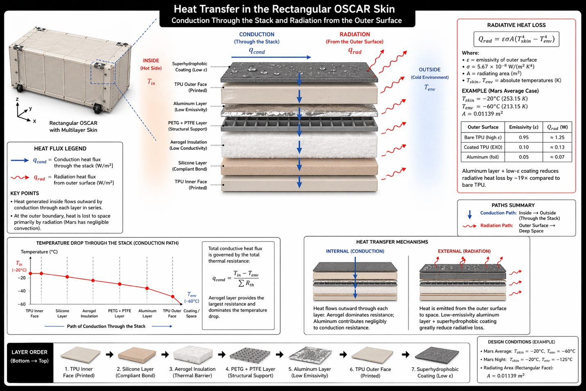
Drop file atassets/marskin/heat-flow.jpg
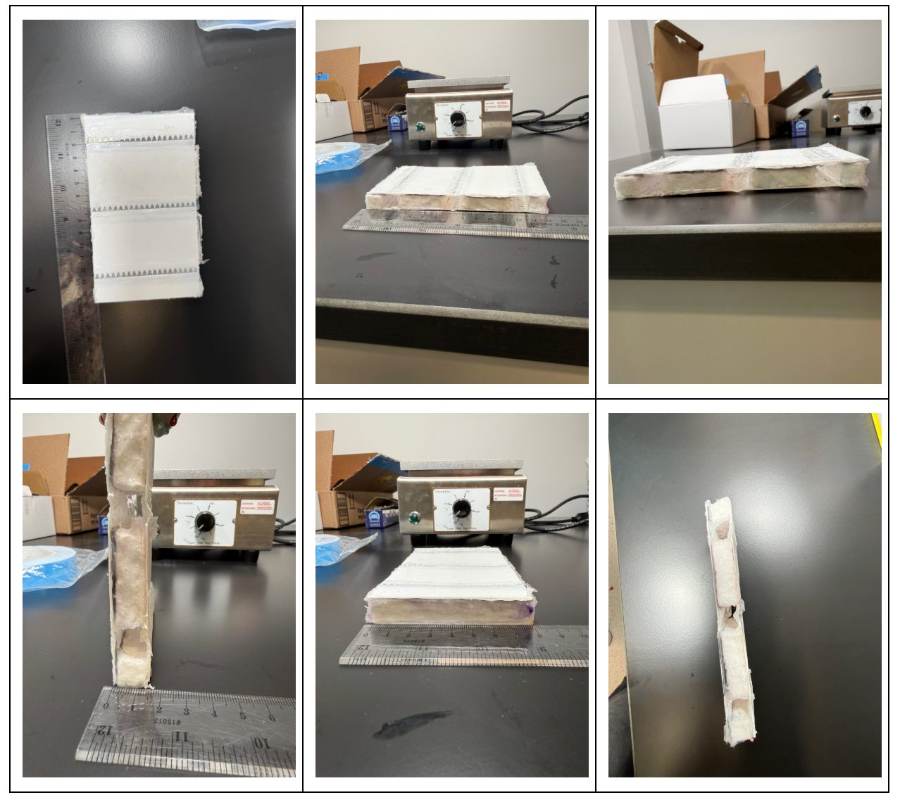
Drop file atassets/marskin/test-setups.jpg
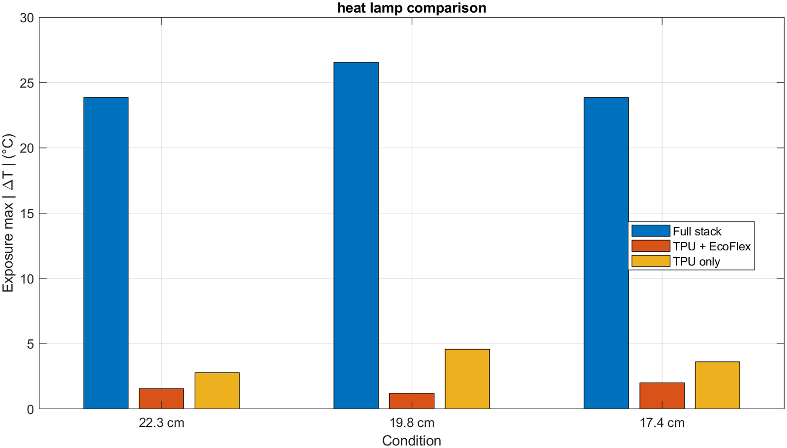
Drop file atassets/marskin/chart-lamp-max.png
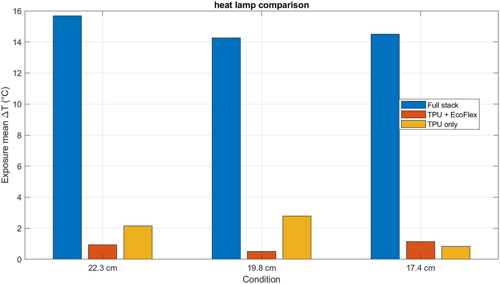
Drop file atassets/marskin/chart-lamp-mean.png
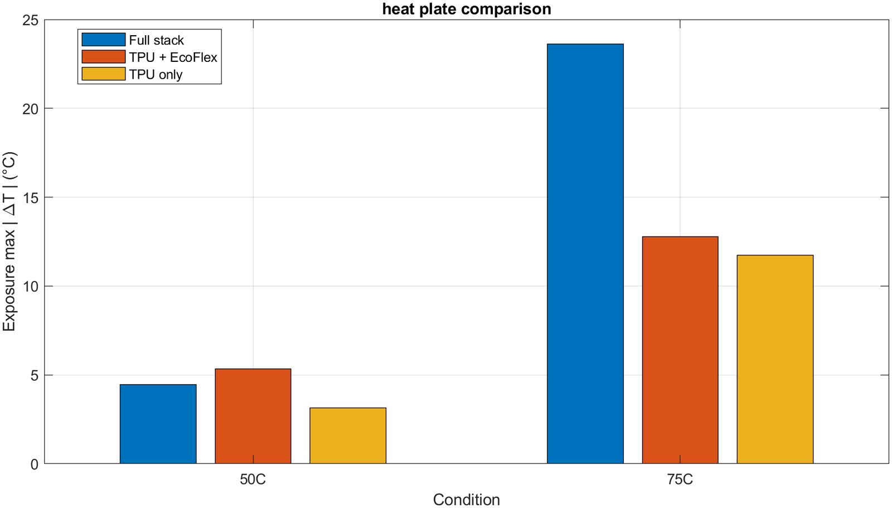
Drop file atassets/marskin/chart-plate-max.png
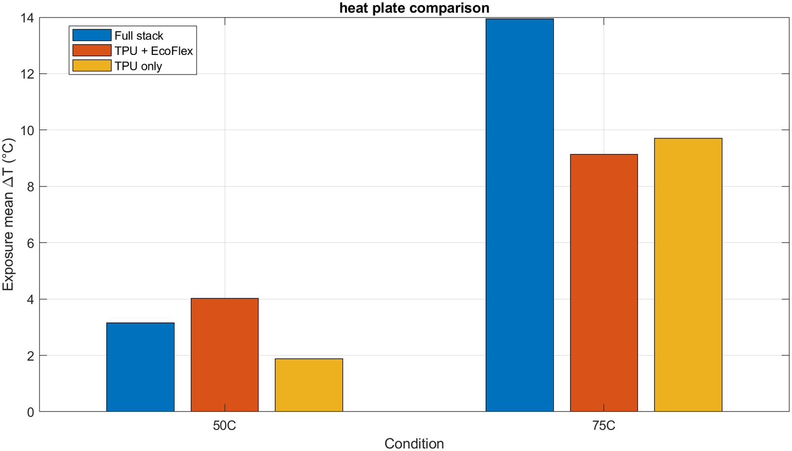
Drop file atassets/marskin/chart-plate-mean.png
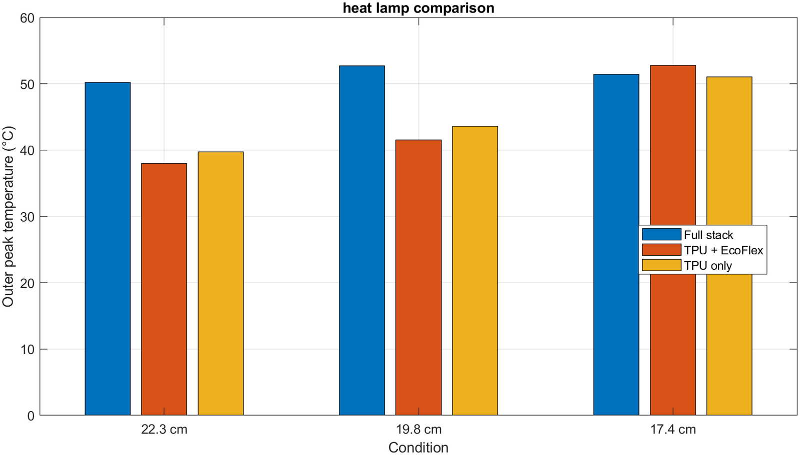
Drop file atassets/marskin/chart-lamp-outer.png
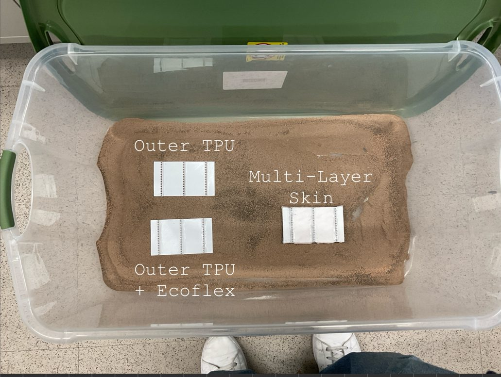
Drop file atassets/marskin/dust-chamber.jpg